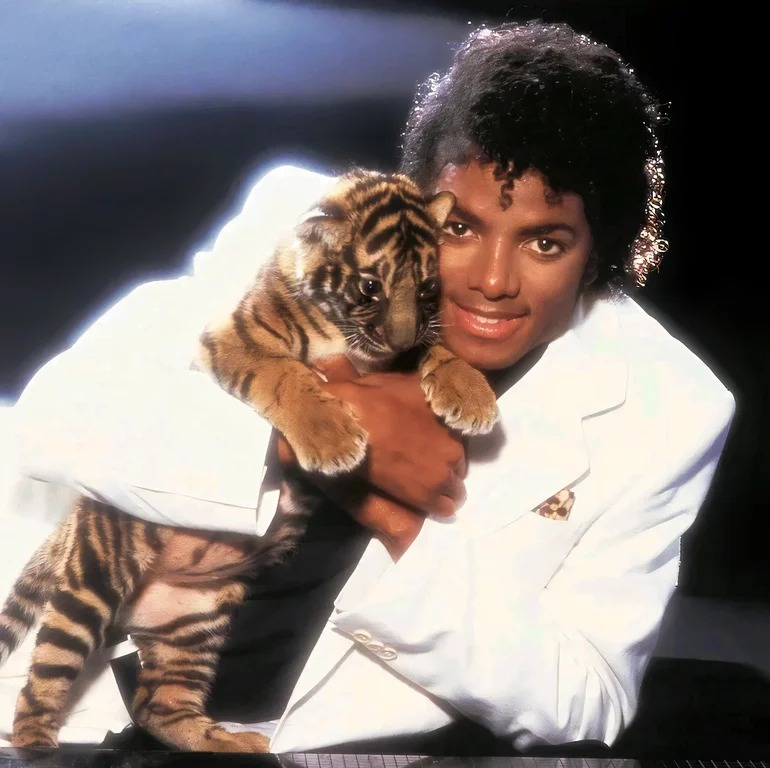
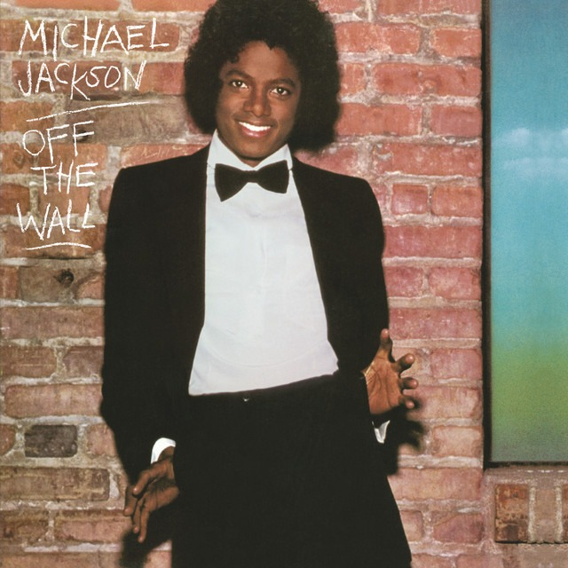
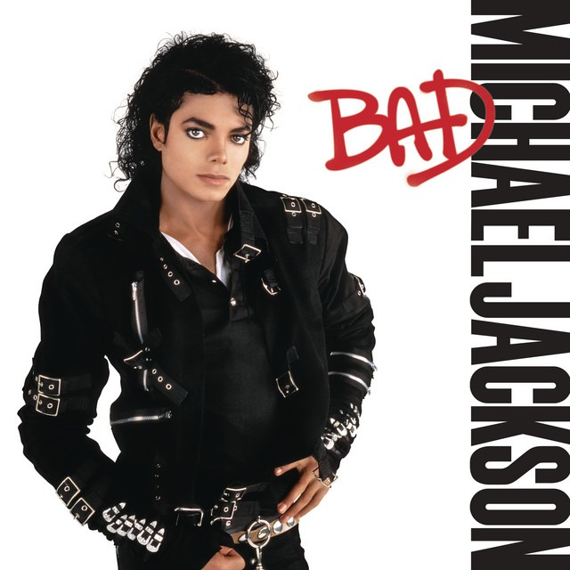
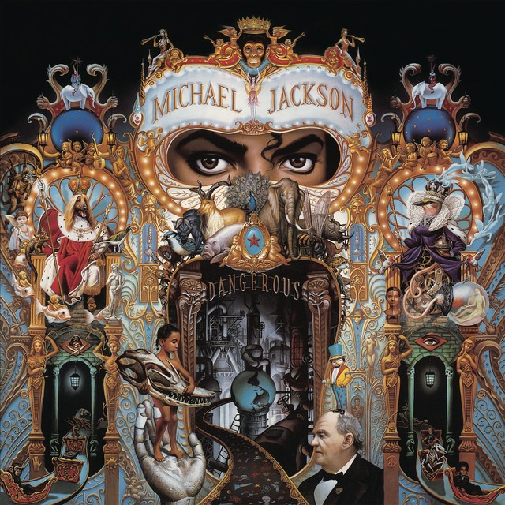
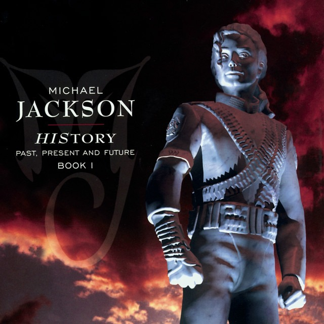

Michael Jackson (nascido em 29 de agosto de 1958, Gary, Indiana, EUA — falecido em 25 de junho de 2009) foi um cantor, compositor e dancarin americano. Conhecido como o 'Rei do Pop', e considerado o artista musical mais influente de todos os tempos.
"If you wanna make the world a better place, take a look at yourself and make a change." - Michael Jackson
| Capa | Álbum | Ano | N° de Faixas | Gênero |
 |
Off the Wall | 1979 | 10 | Funk / Pop / R&B |
 |
Thriller | 1982 | 9 | Pop / Rock / R&B |
 |
Bad | 1987 | 11 | Pop / R&B |
 |
Dangerous | 1991 | 14 | POp / R&B / New Jack Swing |
|  |
HIStory | 1995 | 15 | Pop / R&B |